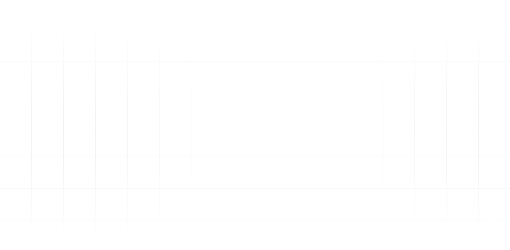
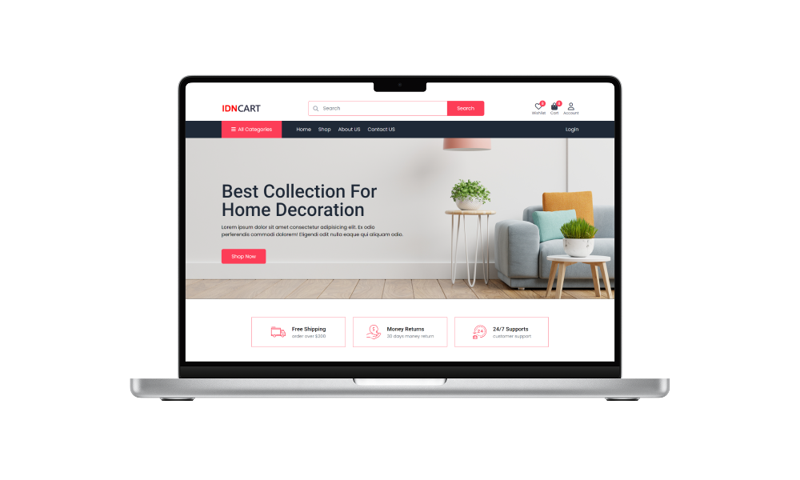
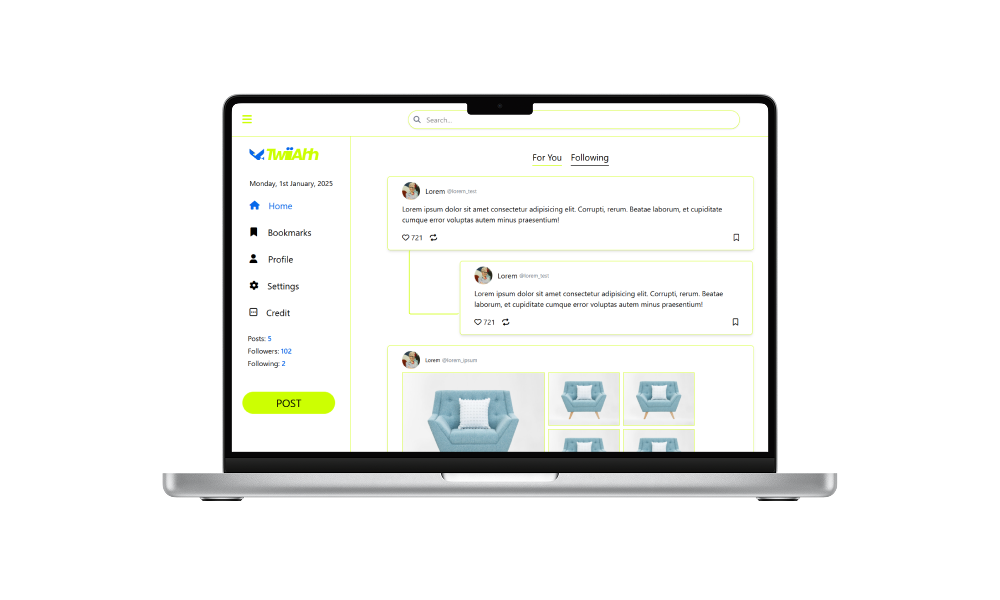
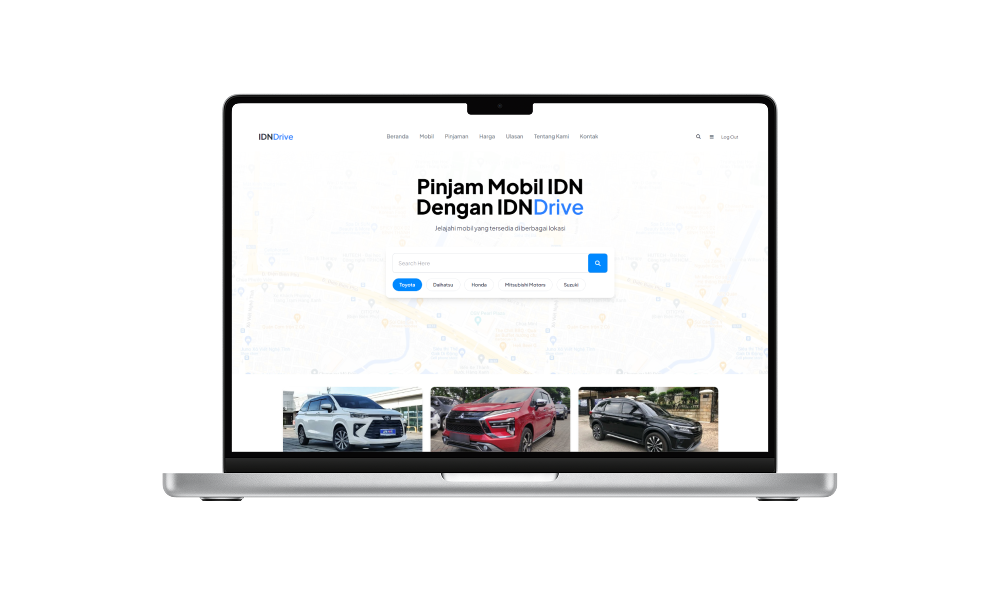
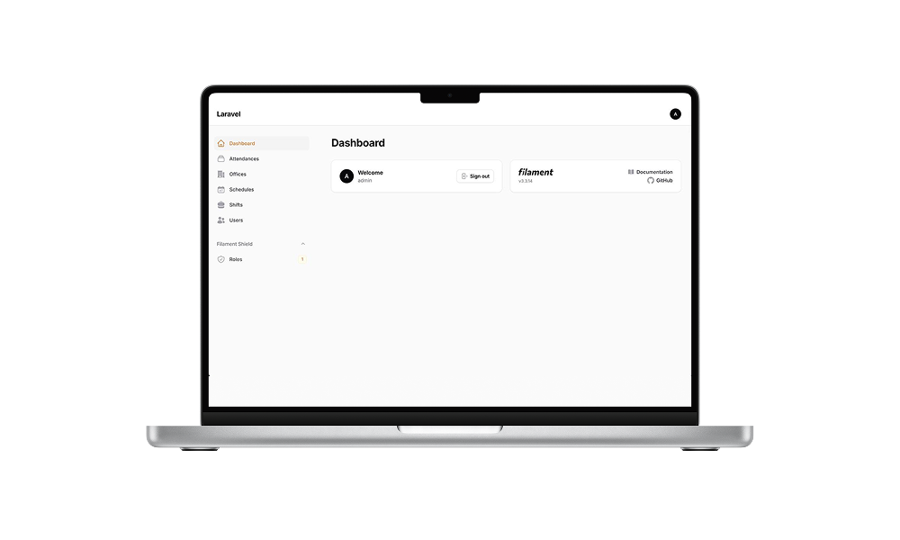
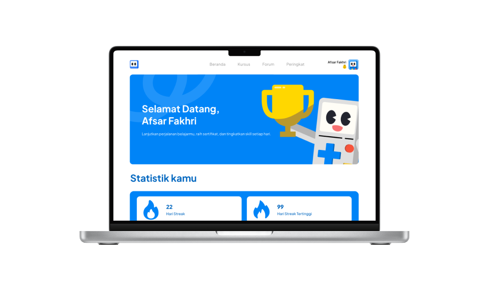
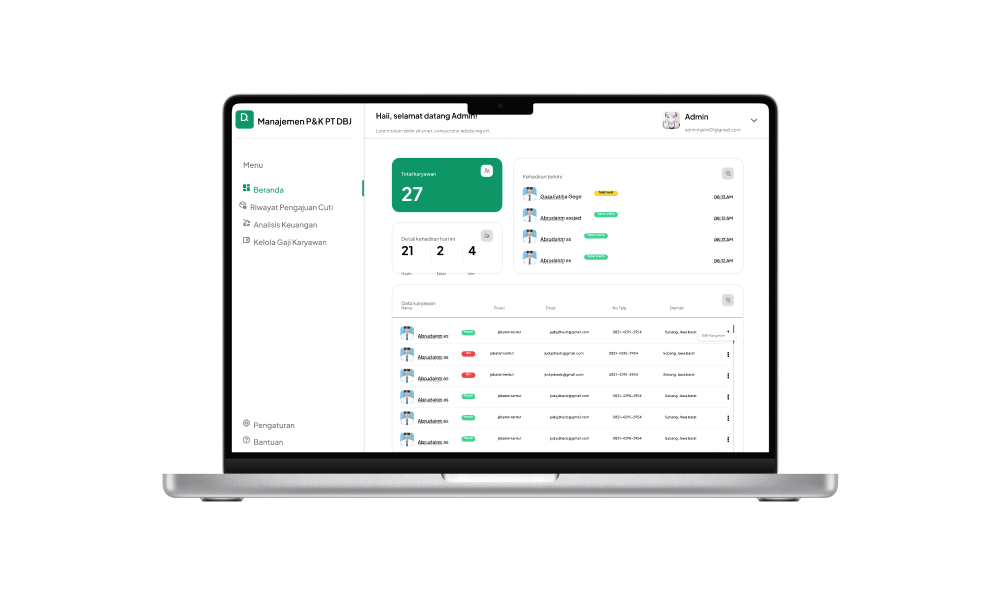

Frontend Developer & UI/UX Designer focused on crafting responsive, intuitive, and visually engaging digital experiences.
Scroll down


Personal Project • Static Website
A modern e-commerce frontend website built with Tailwind CSS, featuring a clean layout and user-friendly interface for a smooth shopping experience.

Team Project • Frontend Developer
A dynamic website developed as a team project, combining functional system features with an interactive user interface.

Team Project • Static Website
A dynamic website with a structured and visually engaging interface, focused on delivering a smooth and intuitive user experience.

Team Project • Frontend Developer
A payroll management website that simplifies the payroll process and employee data handling through a clean and structured interface.

Team Project • UI/UX Designer
An educational platform UI design with a structured layout and user-friendly navigation for an improved learning experience.

Team Project • UI/UX Designer
PT DBJ P&K Management is a streamlined administrative platform designed to simplify HR operations and financial tracking through a clean, structured interface.